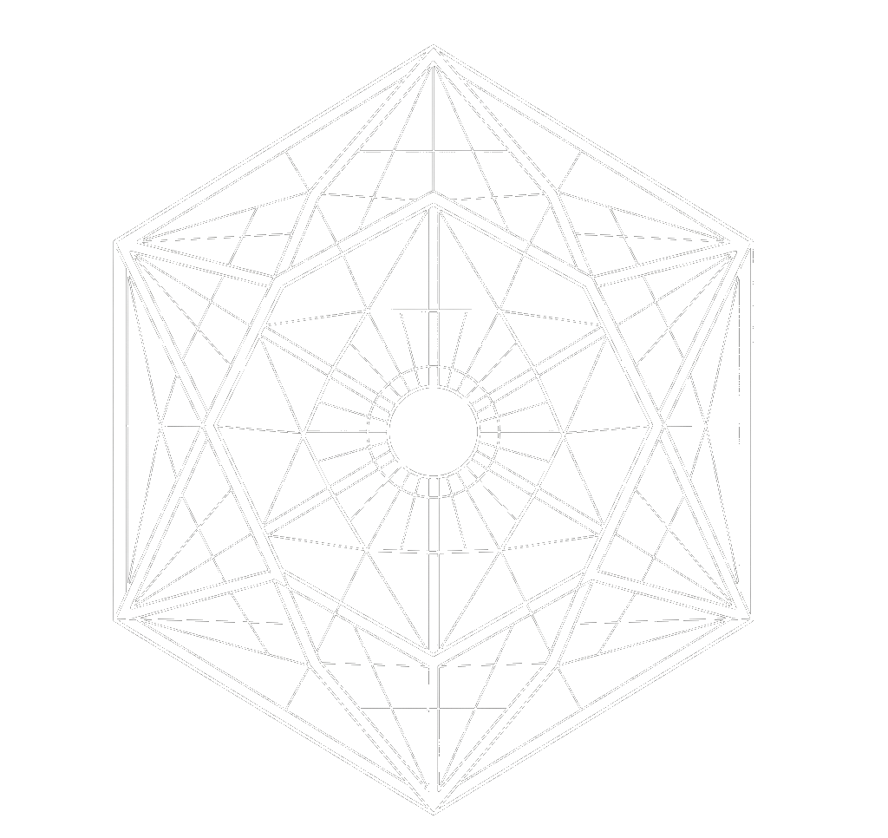

AI Engineering & Immersive Interaction
人工智慧工程與沉浸式交互設計
以 YOLOv11 影像辨識與 Gemini 生成式 AI 為核心，解決家庭食材浪費問題，重新定義現代廚房管理體驗。
點擊下方按鈕觀看系統辨識與食譜生成的完整流程。
全台灣每年食物浪費高達 363 萬公噸，其中大部分來自家庭端不當的食材管理習慣。
冰箱缺乏系統記錄。根據 UNEP (2024) 統計，全球每年產生 10.5 億噸食物浪費，每人年均浪費 74 公斤。
缺乏提醒機制導致食材悄悄腐壞。全球每年因此損失高達 9,400 億美元，60% 浪費來自家庭端。
缺乏即時靈感。Fridge AI 透過 RAG 向量搜尋，將決策時間從 15 分鐘縮短至 30 秒，減少不必要購買。
針對 6 類核心食材（蘋果、香蕉、橘子、菠菜、高麗菜、肉類）進行深度優化。搭載 YOLOv11m 模型，透過 5,560 組真實標注樣本訓練，不僅能辨識類別，更能精準區分「新鮮」與「腐敗」之雙向生命週期狀態。
辨識後自動建立食材清單，追蹤入庫日期與預估保鮮期。3天內即將過期的食材會優先顯示並推播提醒，將廚房管理化繁為簡。
串接 Google Gemini 2.5 Flash 大型語言模型，根據冰箱現有食材一鍵生成個人化食譜。優先消耗即期食材，提供完整烹飪步驟與替代食材建議。
依照三種典型家庭用戶的核心痛點，設計出一套通用且易用的操作流程。
工作繁忙時常忘記冰箱有什麼食材，導致重複採購與食物浪費。每天下班還要花15分鐘決定晚餐煮什麼。
常常買了食材不知道怎麼搭配，嘗試新菜後剩下大量食材不知如何利用，最後全部過期浪費。
年紀大了容易忘記食材已買過或即將過期。複雜的操作介面讓她感到困惑，難以管理冰箱食材。
涵蓋音訊工程、3D 建模與生成式 AI 開發實錄。